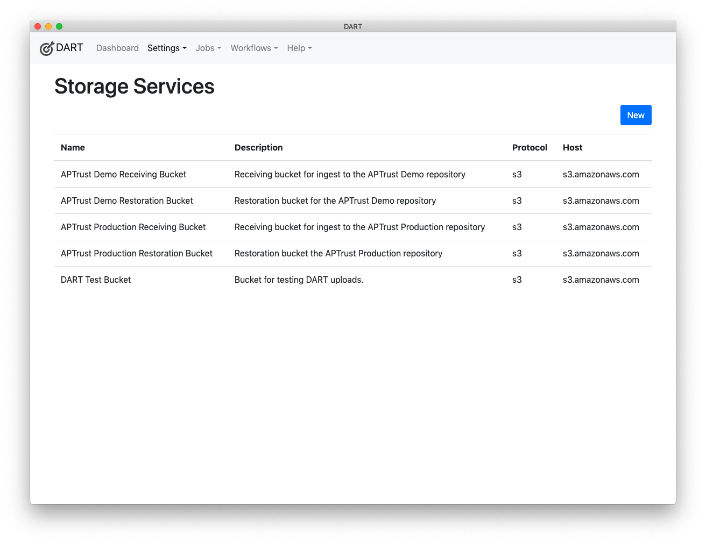

Storage Services
Storage services are not repositories! They are pickup and drop-off points for materials going into or coming out of repositories. Some repositories ask depositors to upload materials into an S3 bucket or an SFTP folder for ingest, and restore materials to a similar bucket or folder for depositors to retrieve.
Storage services allow DART to connect to these pickup and drop-off points. Note, however, that you're free to send data to and from these storage services even if they're not ultimately bound for a preservation repository.
Listing Storage Services
To list all storage services, choose Settings > Storage Services from the menu.

Editing Storage Services
Click any storage servicei in the list to edit it.
Description of Settings
Name
The name of the service. Choose a name that's meaningful to you and that differentiates this service from others. You can change the name at any time without affecting the bevavior or availability of the service.
Description
A description of this service.
Protocol
Choose the network protocol used to communicate with this service. Note: At launch, DART supports only the S3 protocol.
Host
Enter the name or IP address of the service host. Do not include protocol prefixes like https:// or ftp://. For example, the host name for Amazon's S3 service is s3.amazonaws.com. A locally hosted service may be s3.example.com or ftp.example.com. You can also enter an IP address here such as 127.0.0.1.
Port
The port to connect to. In most cases, you'll want to leave this at 0 (zero). Set this only if the service is running on a non-standard port number.
Bucket
The name of the bucket you'll be uploading into or downloading from on the remote host. For the S3 protocol, this will be a bucket name like aptrust.dart.test. For protocols like FTP and rsync, this will be a directory name like uploads/ingest/ or downloads/restore.
Allows Upload
Choose Yes if this service allows you to upload files, No otherwise.
Info
This setting is important. When you run a job, DART gives you a choice of
storage services to which to send your files. DART will show only those
services where Allows Upload is set to Yes.
Allows Download
Choose Yes if this service allows you to download files, No otherwise.
Info
While DART does not support downloads in its initial release, it may support them in a future release.
Login
Enter your login name for the service. For FTP and rsync services, this will typically be a user name. For S3 services, it will be an access key ID.
For S3 services, you may want to keep your access keys in an environment variable. If you choose to do so, you can enter env: followed by the name of the environment variable here and DART will pull the setting from the environment at run time.
For example, if you keep your AWS access key id in an environment variable called AWS_ACCESS_KEY_ID, then enter env:AWS_ACCESS_KEY_ID.
Info
Environment variables beginning with env: work only when you launch DART from the command line. They don't work when you launch by clicking the DART icon.
Password
Enter your password for the service. For FTP and rsync services, this will typically be an actual passowrd. For S3 services, it will be a secret access key. As with the Login field above, you can set this to reference an environment variable using the env: pattern. For example, env:AWS_SECRET_ACCESS_KEY.
Login Extra
This field is typically not used. If your storage service requires it, the plugin documentation should describe what to enter here. Otherwise, leave this field blank.